General Contracting | Restoration & Mitigation | IICRC WRT Certified
3850 Royal Rd, Fairbanks, AK 99701 907-371-9868 | branden@roybalconstruction.com roybalconstruction.com
Roybal Construction App Manual
Field Forms, Office Admin, Job Board and the Customer Portal: how the crew, the office and our customers use them, task by task.
Edition{{EDITION}}
Field app build{{BUILD}}
ForOwner, crew leads, crew
Every screen in this manual was captured from the live app code with made-up demo jobs, names, phone numbers and amounts. Nothing shown is a real customer.
The manual is rebuilt from the repository whenever a feature ships, so check the edition date against the newest copy in the project files.
{{LICENSES}}
Contents
Chapter 1
The app at a glance
Everyone reads this chapter
The four apps
The Roybal app is four screens that share one set of job records. A photo a crew member takes on a phone shows up in the office, on the customer's page if the office shares it, and in the carrier packet. Nothing has to be typed twice.
App
Where to open it
Who uses it
Field Forms
app.roybalconstruction.com on the phone; add it to the home screen
Every crew member, every day on site
Office Admin
app.roybalconstruction.com/admin on a computer
Branden (owner and office)
Job Board
app.roybalconstruction.com/board
Branden and the crew leads for scheduling
Customer Portal
portal.roybalconstruction.com/j/… (a private link we text)
Customers; no account needed
Logins and roles
Each person signs in with their own email. What they can change depends on the role on their login. The office sets roles; there is no role switch inside the apps.
Role
What it can do
owner
Everything. Only the owner sees and answers Approvals, which covers every money decision and anything that sends to a customer or adjuster.
office
Office work: Magicplan create/link/pull, site-walk recordings, logging receipt returns, lead and contact edits, the equipment fleet list. (Nobody holds this role yet.)
crew_lead
All field forms, photos, receipts, AI drafting and sync. Bid actions that write to the board (site visit done, estimate sent) save on the phone and are logged by the office. Can add and edit units on the equipment fleet list.
crew
Same as crew lead in the field app.
agent
The automated helpers (phone receptionist, morning brief). They can propose work but can never approve it, and they cannot change job files.
new signup
Read-only. A brand-new login can sign in and see jobs, but nothing it changes is saved to the cloud until Branden gives it a role.
Giving someone a roleWhen a new hire signs up, their login starts read-only. Branden sets their role (usually crew) the day they are handed a phone. Roles are changed in the database, not in the apps; ask Claude in the project to do it and name the person and the role. When someone leaves, their login is disabled, never deleted, so their past work keeps its name.
How a job moves through the app
Restoration jobs (water, fire, mold, storm) and construction jobs (remodel, new build, rebuild) share the same engine but get different form sets. A restoration job can spin off a linked reconstruction job when the drying is done (see The job page).
Chapter 2
Field Forms
For the crew, on phones and tablets in the field
Field Forms is the crew's job binder: every form, photo, reading and signature for a job lives here, works with no signal, and turns into clean, branded PDFs for the carrier.
Signing in, or working offline
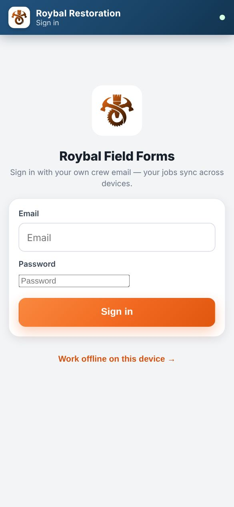
Sign in with your own crew email.
Open app.roybalconstruction.com on the phone. In Safari tap Share → Add to Home Screen so it opens like an app.
Enter your crew email and password and tap Sign in. Your jobs download and stay on the phone.
No signal at the first launch? Tap Work offline on this device →. Everything works and saves on the phone; sign in later to sync it up.
Tap the orange 👤 Set tech chip in the top bar and pick your name. It tags your photos, logs and voice notes to you. It is set per device.
TipThe dot at the top right shows sync: green Synced, amber Syncing…, red Offline, saved on device or Sync error.
New login?Until Branden sets your role, you can see jobs but your changes stay on your phone only. If the account panel says "this account may not write", tell the office.
The job list
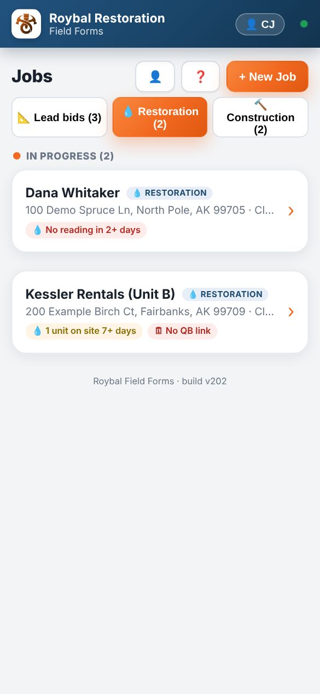
Jobs, Restoration tab, with watch flags.
Three tabs run across the top:
📐 Lead bids: bids in progress, plus open leads nobody has started yet.
💧 Restoration: water, fire, mold and storm mitigation.
🔨 Construction: remodels, new builds and rebuilds.
When you are online, jobs group under the Job Board's stage headers (In Progress, Final / Punch, On Hold, Scheduled…), so the list reads like the whiteboard.
Watch flags under a job tell you what needs attention, for example:
💧 No reading in 2+ days: the moisture readings are stale.
💧 1 unit on site 7+ days: carriers question equipment past day 7.
🗓 No QB link: the board job is not linked to QuickBooks Time.
The 👤 button opens your account: who is signed in, the sync status line, ↻ Sync and Sign out. A finished job can be archived with 🗂 Archive; it moves to the 🗂 Archived list at the bottom and is never deleted.
Starting a job
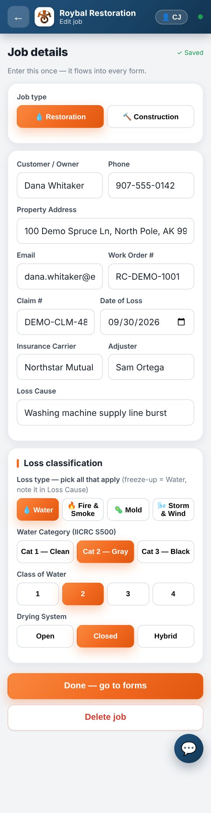
Job details: entered once, used on every form.
Pick the 💧 Restoration or 🔨 Construction tab, then tap + New Job.
Fill in the header: customer, phone, property address, email, work order #, claim #, date of loss, carrier, adjuster and loss cause. It saves as you type (✓ Saved).
Restoration: tap every loss type that applies (💧 Water, 🔥 Fire & Smoke, 🦠 Mold, 🌬️ Storm & Wind). Each one opens its own fields: water category and class, drying system, smoke type, mold condition, storm cause.
Construction: set the project type (Remodel, New Construction, Reconstruction), contract amount, lender if any, start and target dates, permit numbers.
Tap Done — go to forms.
TipTapping + New Job twice on a slow phone will not make two jobs: an untouched blank job is reused. Bids that start from the Job Board already carry the customer header.
The job page
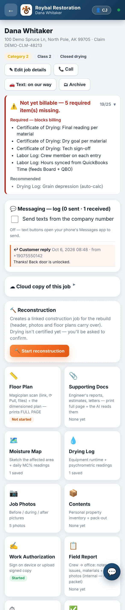
Job page: badges, actions, completeness, tiles.
The top shows the customer, address, claim # and badges (water category and class, drying system). Under it:
✎ Edit job details, 📞 Call, 🚗 Text: on our way and 🗂 Archive.
Completeness panel. "Not yet billable" lists every item still missing before the job can be billed, then recommended items. Work it down to zero before the packet goes out.
💬 Messaging. Texts sent from the app and the customer's replies. Tick Send texts from the company number to text from the toll-free line instead of your own phone.
🔨 Reconstruction (restoration jobs). 🔨 Start reconstruction creates a linked construction job for the rebuild, carrying the header, photos and floor plans across.
Tiles, one per form. Each shows Not started, Started, or a count such as 5 photos.
At the bottom: 📄 Full job packet (PDF) and 📝 Construction Narrative (restoration) or 📝 Progress Update (construction).
Tiles on every job
What it is for
📏 Floor Plan
Magicplan scan (link, ⟳ Pull, files) plus the dimensioned plan; prints full page.
📎 Supporting Docs
Engineer's reports, estimates, letters. Prints full page and the AI reads them.
📷 Job Photos
Before, during and after pictures.
📦 Contents
Personal property inventory and pack-out, boxes with QR labels, pack-back receipt.
✍️ Work Authorization
Sign on the device or upload a signed copy.
📋 Field Report
Crew to office: notes, issues, materials and photos. Internal, never in the packet.
⏱ Labor Log
Every hour from QuickBooks Time on one page for the packet.
🔁 Change Order
Scope or supplement changes; can be sent to the portal for e-signature.
🧾 Construction Invoice
T&M or contract billing, drafted by the AI or built by hand.
🏗️ Estimate
Proposed scope and pricing, drafted from the site visit.
🌐 Client Portal
What the customer sees. Internal only, never in the packet.
🧾 Receipts
Every material, rental and dump receipt, read by the AI, with a running job cost. Internal.
Restoration forms
Restoration jobs add 🗺️ Moisture Map, 💧 Drying Log and ✅ Cert. of Drying. Moisture maps and drying logs take a new page per area or per day; the tile counts how many are saved.
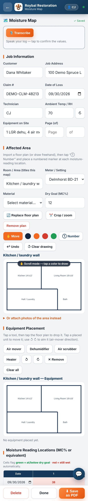
Moisture Map with an imported floor plan.
🗺️ Moisture Map
Tap 📄 Import floor plan (PDF / image) or draw freehand. ✂️ Crop / zoom fits it.
Tap ① Number and drop a numbered marker at each reading location.
Pick the material; the IICRC dry goal fills itself in.
Each visit, tap + Add reading date and enter MC% per location. Readings turn green when dry and red when wet, and the trend graph plots each location against the dry goal.
Place equipment icons on the plan (dehus, air movers, scrubbers) so the packet shows the equipment layout.
💧 Drying Log
🧮 Size the equipment works out how many units the room needs.
📷 Scan equipment logs each unit from its QR label as it goes in, moves or comes out (Scanning equipment in and out). + Add equipment still adds a row by hand (asset #, type, location, placed, removed) when a unit can't be scanned.
+ Add reading each visit: outside, reference and affected temperature and RH. GPP and grain depression calculate themselves, and any unit on site 7+ days is flagged for the carrier.
✅ Cert. of Drying
The S500 dry-standard table (material, meter, goal, final reading, dry ✓) and a three-way sign-off: tech, owner and adjuster. Sign on the device or upload a signed copy.
VoiceMoisture Map, Drying Log, Photos and several other forms have 🎙️ Transcribe: say the readings, tap ⏹ Stop, then confirm the values it heard.
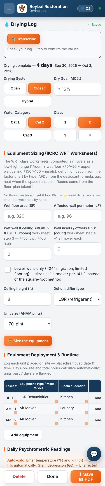
Drying Log: drying system, category and class.Equipment placed and removed, with runtime.
Scanning equipment in and out
Every dehumidifier, air mover, air scrubber and heater carries a QR label with its asset tag, such as AM-014. Scanning the label is how a unit goes on the drying log: the device writes the row (tag, type, room, and the date and time to the minute), so nobody types tags or times. One button opens the scanner and it stays open for the whole drop. Once the room is picked there is nothing to tap per unit.
Setting units (Place)
Open the job's 💧 Drying Log. Under Equipment Deployment & Runtime tap 📷 Scan equipment. The first time on a device it asks who you are, from the same list as 👤 Set tech.
Pick the room. The suggestions are rooms already used on this job, the floor plan's rooms and the moisture map labels; tap one, or type the room and tap Use. Spell it the way the job already does.
Check the toggle at the top says Place. Point the camera at a label from 6 to 10 in. away. A green flash, a beep and a buzz mean it's logged, and the card at the bottom reads like AM-014 Air mover → Kitchen. Go to the next unit.
Next room: tap Room: Kitchen ▾, pick the room and keep scanning. The room stays picked until you change it.
Tap Done. Each unit is now a row on the drying log with a small 📷 in its Asset cell. Check the counter (Placed 6 · Moved 0 · Removed 0) against the units you set.
Pulling and moving units
Pulling: switch the toggle to Remove and scan each unit as it comes out. No room is needed. Its Removed time and Hrs fill in on its row.
Moving to another room: stay in Place, pick the new room and scan the unit. It keeps its one row, so it is never counted twice, and the app adds a Notes line such as moved to Bedroom 2 10/09 14:30.
Units already typed on the log (a job started before scanning, or a row added by hand): scan them the same way. The row stays a typed row: a Remove scan fills in its Removed time and Hrs, and a Place in another room adds the moved-to line. It never adds a second row for the same unit. The scan is kept like any other and prints on the scan record. If you type over or clear that Removed time, or delete the moved-to line, what you type wins and that scan is undone.
The Place / Remove toggle stays where you left it, even the next time the scanner opens. Look at it before the first scan.
An amber card says
What it means
AM-014 is already in Kitchen
Scanned twice. Nothing new was logged.
AM-014 isn't out on this job
Remove mode, but nothing on this job's drying log shows the unit out, scanned or typed. Check the toggle and the job.
AM-014 is already marked removed (10/03 09:00)
Remove mode, but a Removed time was typed on its row and has passed. Nothing new was logged. If that time is wrong, fix it on the row.
… (still out on another job)
It's logged here anyway. The other job never recorded it coming out; the office sees both and sorts it out.
What is 101?
A tag with no letters that isn't on the fleet list yet. Tap Air mover, Dehumidifier, Air scrubber or Heater once.
That QR code isn't an equipment label.
It read some other QR code, such as a contents box label.
When a label won't scan
Wipe the label, move a little closer or farther, and turn on 🔦 if the device shows it.
Tap ⌨ Type tag at the bottom of the scanner, type the tag (AM-014, or am 14) and tap Use. It's logged like a scan, with the time and room, and marked as typed.
If the scanner says Camera didn't start., it offers 📷 Photo of the label (take a picture of the label and the app reads the QR code from it), ⌨ Type the tag and Try the camera again. On an iPhone or iPad, check that Settings → Safari → Camera isn't set to Deny.
If the scanner won't open at all, add the row by hand with + Add equipment as before. A typed row counts everywhere a scanned row does, and once the scanner works again, scanning that unit fills in the same row.
Undo and fixing a row
Scanned the wrong unit or the wrong room? Tap Undo on the card right away, before the next scan, then scan again.
Later, on the drying log, ✕ on a scanned row asks Undo this scan? and undoes the whole row: its placing, any moves and its removal. Then scan the unit again the right way.
A wrong scan on a typed row: retype or clear its Removed time, or delete the moved-to line. Don't ✕ the row: that takes the whole row off, with its placed time (it asks first, and undoes the row's scans with it).
On a scanned row the tag, the placed time and Hrs come from the scan and can't be typed over, and neither can the removed time once the unit was scanned out. The fill handle skips them. Type, Location and Notes stay editable, so you can still fix a room's spelling or write why a unit is still needed after 7 days.
A scanned unit that came out without being scanned: type its Removed date and time on its row. That time is its removal: a Remove scan after it changes nothing, and scanning the unit back in starts a new row. From then on the old row's Removed can still be corrected, but not cleared or set later than the time the unit was scanned back in. A Removed time still ahead (a planned pickup) leaves the unit out, and the Remove scan at pickup replaces it (Undo on the card puts the planned time back).
Good to know
📸 Room photo in the scanner takes a During photo of the room you're in, captioned with the room and the tags you scanned there (Equipment - Kitchen - AM-014, AM-015).
Scanning works with no signal once the device has been online at least once since scanning was switched on. Two people can scan on the same job at the same time; every scan is kept and the rows come out the same on both devices after they sync.
Each scan records the device's date and time, the room, the login and the tech set on the device. Leave the device's Date & Time on Set Automatically.
The "still out on another job" check is only as fresh as the device's last sync.
What printsOn the drying log sheet, a placed or removed time recorded by a scan (on a scanned row, or a typed row's Removed filled by a Remove scan) carries a small S, with the legend "S = recorded by scanning the unit's QR label on site". Under the equipment table, the Equipment scan record lists every scan in time order (Time, Tag, Type, Action, Room, Read by, Tech). Its footnote tells the adjuster that the times come from the scanning device's clock, and that each scan is also logged on Roybal's server when the device syncs, in a log that can't be edited. An undone scan comes off the row and the printed record; the server log keeps both the scan and the undo.
Switching onThe 📷 Scan equipment button stays greyed out until this feature's database update is applied, with the note "Scanning switches on after this feature's database update is applied." A device that hasn't been online since then says "Connect once to switch scanning on": get a signal and open the drying log again. Until then, add rows with + Add equipment.
Job photos
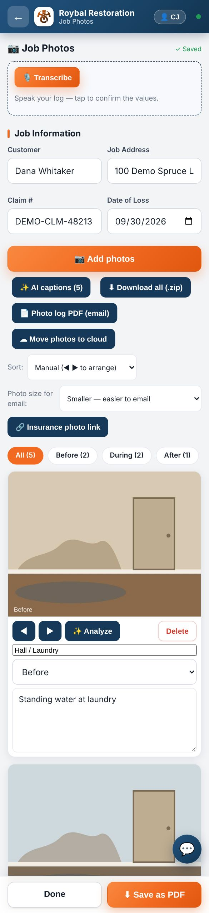
Job Photos: stage, room and caption on each shot.
Tap 📷 Add photos. Set the stage (Before, During, After) and the room.
✨ AI captions writes a caption for each photo. Edit any caption you want.
Filter with the chips on top, or sort by stage, room or date.
Sending photos to a carrier
📄 Photo log PDF (email) makes full-size photos, two per page, in files under 10 MB: the attachment a reviewer can open.
⬇ Download all (.zip) packs every original with an index sheet.
🔗 Insurance photo link publishes a private link to the full-resolution set (needs sign-in and signal); Turn off stops it.
☁ Move photos to cloud frees phone space and keeps thumbnails.
CarefulDeleting a photo deletes it on every device.
📦 Contents
+ Add item or ✨ Scan room photo to list items, with quantity, room, box, condition and replacement value; age gives a live ACV. Non-salvageable items roll into the Loss List. 📦 Boxes prints QR box labels, ↩︎ Pack-back runs the return checklist with the owner's sign-off, and 📄 Inventory PDF / ⬇ CSV export it.
Signatures and the work authorization
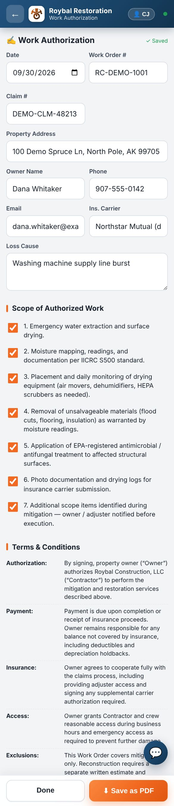
Work Authorization: scope, terms, signatures.
Get the work authorization signed before any work starts.
Open ✍️ Work Authorization. The header comes from the job.
Review the authorized scope with the owner; the standard items are pre-checked.
Choose ✍️ Sign on device: the owner signs with a finger, then the Roybal rep signs. Or choose 📎 Upload signed copy to photograph a wet-signed paper copy.
If the owner agrees to job texts, tick the text-consent box.
The same sign-or-upload choice is on the Cert. of Drying and the Cert. of Completion. To have a customer sign from home instead, send the form through the portal (Sending a document for signature). A signature made in the portal is copied back into the form.
Every formsaves as you type. ⬇ Save as PDF at the bottom makes a branded, letter-size copy under its own file name; Done goes back to the job.
Receipts
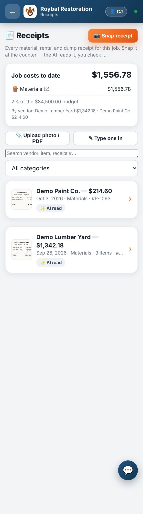
🧾 Receipts: job cost to date by category and vendor.
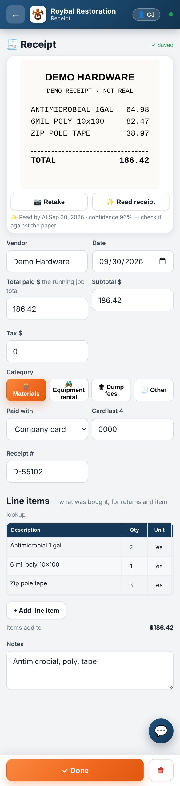
One receipt after the AI read it.
Snap every material, rental and dump receipt on the job it belongs to. QuickBooks bank feeds already bring in most charges but never know which job they were for; tagging the receipt to the job here fills that gap.
On the job, open 🧾 Receipts and tap 📷 Snap receipt (or 📎 Upload photo / PDF, or ✎ Type one in).
With signal, the AI reads the store, date, total, tax and line items by itself (✨ AI read). With no signal it says so; tap ✨ Read receipt later.
Check the total and set Paid with: Company card, Store account, Cash, or Personal card (reimburse). Tap ✓ Done.
The Job costs to date card totals everything by category (🪵 Materials, 🚜 Equipment rental, 🗑 Dump fees, 🧾 Other) and by vendor, and warns when spending passes the job budget. Search finds any item ("which job got the LVL?"). Receipts are internal and never go in the packet.
ReturnsSnap the return slip like any receipt. The AI reads it as a return and the slip shows ↩ This is a return slip: tap ↩ Log as a return, check the receipt it returns, the items and the refund, and save. The refund comes off the job total, the slip's photo moves onto the return, and the original receipt shows ↩ Returned. A return on the phone is read-only; a change, a delete, or a return across two receipts is done in the office (see Receipts and returns).
Construction forms
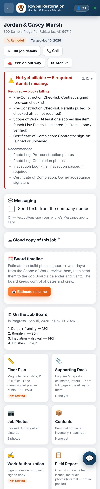
A construction job with its board timeline.
Form
Use it to
📐 Scope of Work
List line items per room or area, tagged by trade, plus allowances.
🗒️ Pre-Construction
Check contract, deposit, permits, selections and utilities before building; log permits.
🎨 Selections
Track the owner's finish and fixture choices against allowances, with order-by dates.
👷 Sub Schedule
Sequence the trades with dates, status and COI tracking. ⤓ Prefill from board phases.
🏛️ Inspection Log
Record each inspection, result, corrections and reinspection date.
🔧 Punch List
Walkthrough items with photos and an owner sign-off.
💰 Draw Schedule
Payment milestones; → Invoice pre-fills an invoice for a draw.
🏁 Cert. of Completion
Final checklist, warranty, contractor and owner signatures.
📅 Board timeline.📅 Estimate timeline drafts the build phases (hours and wait days) from the scope; review them and tap 📅 Send to Job Board. After that the board owns the dates, and the job page shows a read-only 🗓 On the Job Board card.
Construction jobs get their own watch flags: failed inspections with no reinspection, sub no-shows, trades behind schedule, selections that need ordering.
Lead bids, site visits and estimates
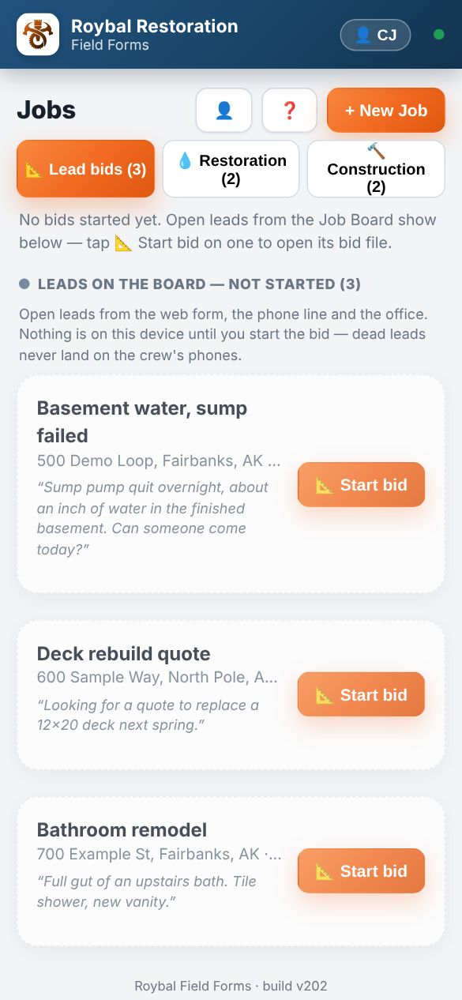
📐 Lead bids: open leads waiting for a bid.
Open the 📐 Lead bids tab. Leads from the web form, the phone line and the office show as grey rows under Leads on the board — not started.
Tap 📐 Start bid (needs signal). This creates the bid file. A greyed-out button means a job for that customer or claim # already exists; open that job instead.
The bid file opens with the 📐 Bid card: 📅 Site visit · 📎 Packet · 🔎 Verify · 📄 Estimate · ✉️ Sent. Work down the card.
At the site visit, scan with Magicplan, record walk clips, take photos, then tap ✓ Site visit done.
The row's bid chip shows progress: 📅 visit → 🔍 inspected → 📄 est. $ → 📄 sent.
When the office marks the lead Won on the board, the same file becomes the job; the Bid card goes away and the page offers 📷 Copy N photos to turn site-visit photos into "before" shots. A lost lead's bid file archives itself.
Office onlyRecording site walks, drafting scope notes, and Magicplan Create / Link / Pull are for the owner and office. Crew see the scan and its files.
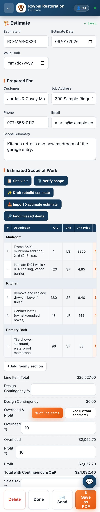
🏗️ Estimate: AI bar, then line items by room.
The site visit and the estimate draft
📏 Floor Plan → 📐 Magicplan.📐 Create Magicplan project (or 🔗 Link existing project), scan in the Magicplan app, export, then tap ⟳ Pull. Pull brings in everything exported, rooms and files.
📋 Site visit (on the estimate). Slots for 🎥 walk clips, reports and drawings, extra photos, handwritten notes and Magicplan files, plus a typed scope box with 🎙️ dictation. Walk clips record offline and upload themselves (up to 15 minutes each).
✨ Draft scope notes turns the walk clips into notes by room; mark each ✓ keep, ✎ reword or ✕ drop. Only kept notes reach the estimate.
✨ Draft estimate from site visit runs in the background and fills the line items. The 🔎 Verify checklist on the Bid card makes sure a person checked it.
🔎 Find missed items looks for gaps; 📥 Import Xactimate estimate reads a carrier estimate.
✉️ Send: save the PDF (or a Word copy), open the email, attach it. Opening the email marks the estimate sent on the board. Estimate numbers are suggested as RC-<last name>-<month>.
The 🧾 Construction Invoice uses the same editor, with ✨ Draft from documentation and ⬆️ Push to QuickBooks.
Field reports, labor and texting
📋 Field Report is the crew's note to the office: notes, issues, materials needed and photos, with a signature. 📱 Text to office sends it. It never goes in the packet.
⏱ Labor Log pulls every hour logged to the job in QuickBooks Time: link the QuickBooks job once with Link QuickBooks job, then ⤓ Sync labor from QuickBooks. Hours sync is an office job; crew may see an error.
🚗 Text: on our way on the job page texts the customer. With Send texts from the company number on, the text comes from the toll-free line and replies show in the job's Messaging log and on the office Today screen.
The job packet and narrative
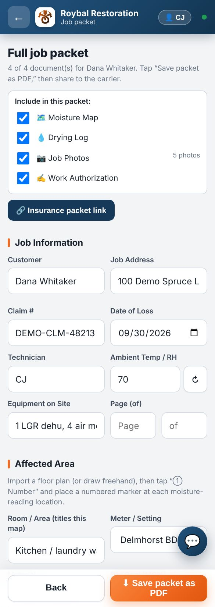
Full job packet: choose what goes in.
On the job page tap 📄 Full job packet (PDF).
Untick anything to leave out of this job's packet (the choice is remembered).
⬇ Save packet as PDF for one carrier-ready file, or 🔗 Insurance packet link for a private link to the whole packet.
Field Reports, the Client Portal and Receipts are never included. An uploaded signed copy of the work authorization or certificate of drying replaces the generated form.
📝 Construction Narrative (restoration) writes the packet cover letter from the job's facts. It stays locked until the required documents are complete; ⚠️ Override — unlock anyway skips the lock. ✉️ Adjuster email drafts the email with the packet link. 📝 Progress Update (construction) drafts a where-things-stand note for the owner, adjuster or lender.
Ask the office (assistant)
The round 💬 button on every job page opens Ask the office. Type, talk (🎙️) or hand it a photo (📷). It reads this job's records and answers like a colleague, and it drafts paperwork: a change order, an invoice line, a receipt, a text to the customer. Anything that writes or sends shows up as a confirm chip first; nothing happens until you tap it. Drag the panel anywhere; — minimizes it.
AI needs signalEvery AI action (captions, receipt reading, drafts, the assistant) needs a connection and a signed-in login. With no signal you see "No connection — AI needs internet. Your typed entries are saved."
Offline and sync
If the app says "This app is out of date — close and reopen it to update, then sync", swipe the app closed and open it again. Your work is still on the phone and syncs after the update.
The app updates itself in the background and reloads when you are not typing. The build number is at the bottom of the job list.
If a merge happened you'll see "🔀 merged changes from another device". Nothing was lost.
Equipment scans from two devices on the same job merge too: every scan is kept, and the drying log rows come out the same on both.
Chapter 3
Office Admin
For Branden at the desk · app.roybalconstruction.com/admin
The Office Admin is the owner's desk. Tabs run across the top: TodayApprovalsLeadsJobsReceiptsEquipmentContactsCampaignsAnalytics⚙ Settings and ❓ Help. Leads and Approvals carry a count badge when something is waiting. The 💬 button opens the same assistant as the field app, with every job in view.
Today
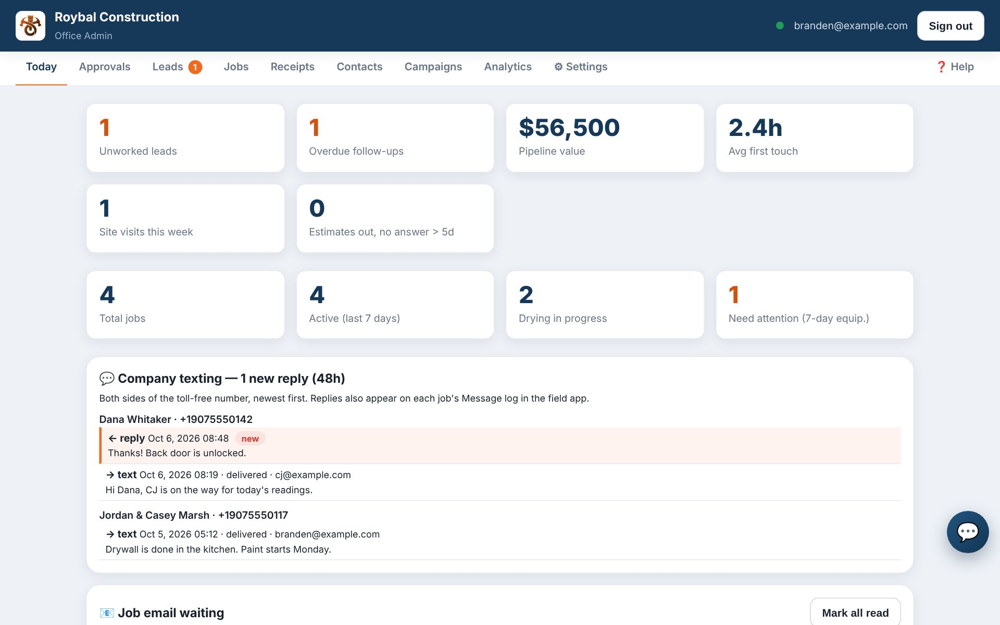
Today: lead numbers, job numbers, company texting and job email.
Lead row: unworked leads, overdue follow-ups, pipeline value, average first touch, site visits this week, and estimates out with no answer after 5 days. Click a tile to jump to Leads.
Ops row: total jobs, active in the last 7 days, drying in progress, and jobs that need attention (equipment out 7+ days; click it for the Equipment tab).
↩ Return windows closing appears only when a store's return window is about to close on leftover material. Nothing left over clears it.
💬 Company texting: the latest conversations on the toll-free number, newest first, with new replies marked.
📧 Job email waiting: unread job email matched to a job by claim # or customer. ✓ Read or Mark all read; anything you handle in Gmail clears itself.
Approvals
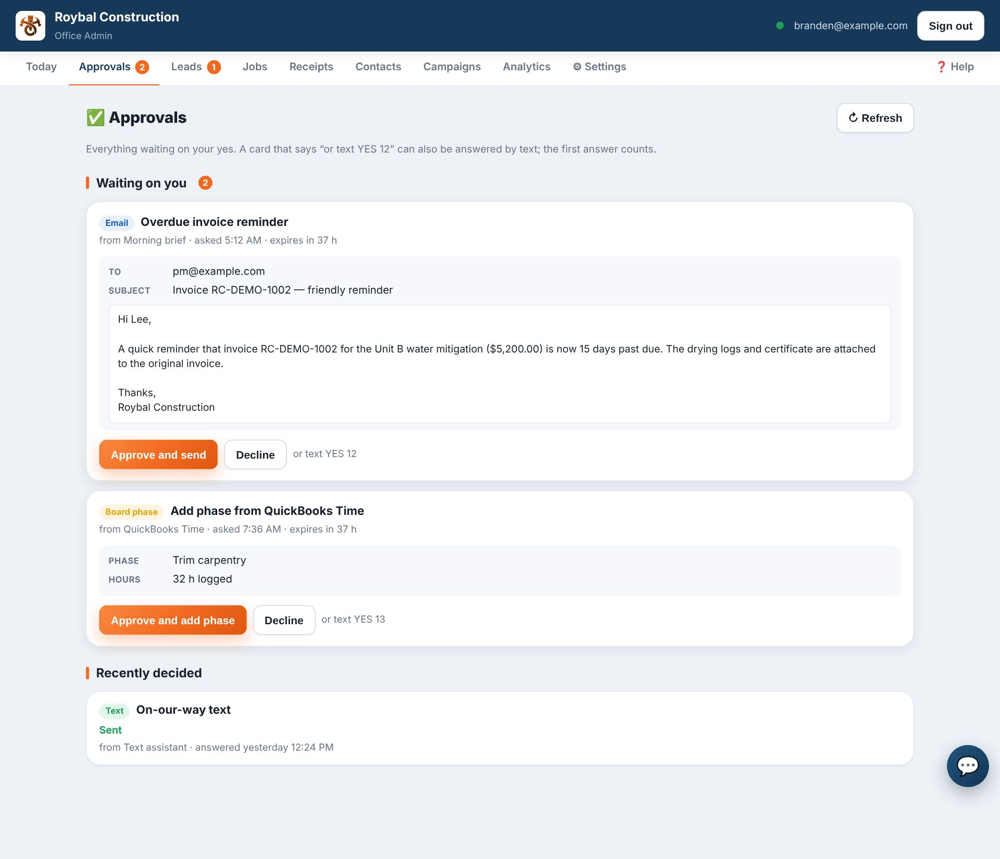
✅ Approvals: everything waiting on the owner's yes.
Anything the automated helpers want to send or change waits here for the owner: overdue-invoice reminder emails from the morning brief, adjuster emails sent for approval from a job's narrative page, phases suggested from QuickBooks Time, customer texts, job stage moves, and invoice gaps from the nightly billing check. Only the owner's login sees this tab's contents.
Read the card: who it goes to, the full message, why it was proposed, and links to the evidence.
Tap Approve and send (or Approve and add phase, Approve and move job, Approve and add lines) and confirm. Or tap Decline, optionally with a reason.
The card moves to Recently decided (last 48 hours) with the result: Sent, Phase added, Moved to…, Declined or Failed.
From your phoneCards that show "or text YES 12" can also be answered by texting YES 12 back to the alert. The first answer wins. The page refreshes itself every 45 seconds.
Invoice gaps
Early each morning the nightly billing check reads every water job that isn't archived and still has an invoice not paid in full, and compares what the job's records show with what its invoices bill:
Equipment days from the drying log: each dehumidifier, air mover, air scrubber and heater from placed to removed, counted in 24-hour periods (a part day counts as a day). When the invoices price drying as one item (a structural-drying bid, or a contract with no itemised scope), the check notes that the days can't be compared and adds no equipment line.
Crew hours from QuickBooks Time during the mitigation (before the Labor Log's start date, when one is set), compared only when the job's invoices bill labor by the hour. When labor is priced inside unit-priced lines or a contract, the check notes that the hours can't be compared and adds no labor line.
Cat 3 steps (containment, floor protection, HEPA vacuuming, antimicrobial, PPE, negative air and HEPA filters) that the job has a record of, in a photo, a change order, the Cat 3 justification or the drying log's air scrubbers, but no invoice line bills.
When documented work isn't billed, an Invoice gaps card lists each line it would add: what, how many, the rate already on this job's invoices, and the log, hours or photos behind it. A line with no rate on this job reads no rate and stays out of the card's total. The total is the lines alone: the new draft invoice adds this job's overhead and profit, and its tax, on top. Under the lines are notes the check never bills, such as days with equipment on and no reading, hours outside the mitigation dates, and Cat 3 items with no record of the work. A job with only notes gets no card.
Check each line against its evidence, then tap Approve and add lines and confirm, or Decline.
Approving adds the lines once, as a new draft invoice on the job (🧾 Construction Invoice in Field Forms), never inside an invoice already there. Recently decided reads Added 3 lines on a new draft invoice.
The office opens the draft and fills in the quantity and price on every line the card showed as no rate. Those lines carry a red Billing check · no rate on this job: price it note in the invoice editor until a price is typed, and ⬆️ Push to QuickBooks refuses the invoice until they are priced. The draft has no number or status and isn't in QuickBooks, and the 📄 Full job packet (PDF) leaves it out until the office gives it an invoice number or pushes it to QuickBooks.
Approvals tab onlyInvoice-gap cards have no "or text YES" line, and a YES text never approves one. If the job's invoice lines change before you approve (an edited, added or voided invoice; a payment or sending one doesn't count), approving fails and says so, and nothing is added; the next night's check files a fresh card if anything is still unbilled and the job is still one it checks (not archived, and not every invoice paid). A card waits 14 days; a gap still there after its card expires is offered again, while one you declined stays quiet until the job's records or invoice lines change.
Leads
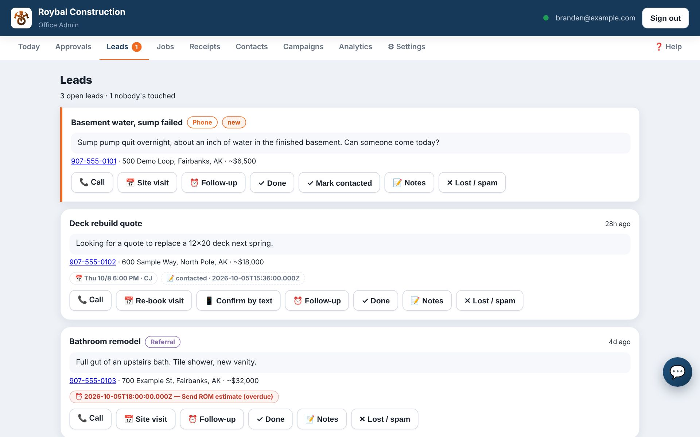
Leads: open leads, newest first, with the next move on each.
Every open lead from the web form, the AI phone line, the website chat and the office shows here with its channel, age, message, phone, address and estimated value. ⚠ marks an emergency.
Button
What it does
📞 Call
Calls the lead.
📅 Site visit
Books the visit: date, time and who's going. The visit shows on the board card and on the bid in Field Forms.
📱 Confirm by text
Opens an editable confirmation text. Texts only go out between 7 AM and 8 PM Alaska time.
⏰ Follow-up
Sets the next move and when.
✓ Done
Logs what happened (site visit done, estimate sent, waiting on customer, no answer) and the next step.
📝 Notes
Free notes on the lead.
✕ Lost / spam
Pick a reason (price, went with another contractor, no response, not a fit) and archive it.
Marking a lead Won happens on the Job Board (Editing a job).
Scam patternOut-of-state owner, no address, "remote estimate only", a broker RFQ or a video-call-only request: reply only with the standard intake (address, photos, site visit required, owner pays directly). Never accept third-party payments or overpayments.
Jobs
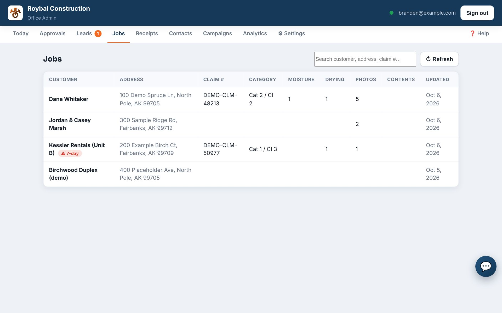
Jobs: every field job in one table.
A searchable table of every job (customer, address, claim #, category, moisture maps, drying logs, photos, contents, last update). ⚠ 7-day marks equipment out a week or more. Click a row to open that job in Field Forms.
Receipts and returns
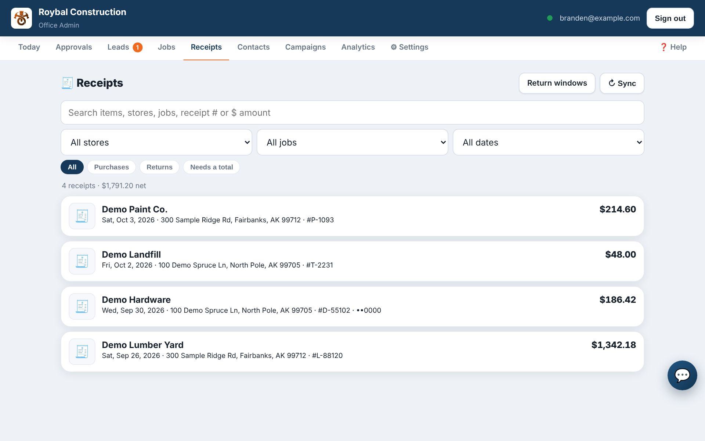
🧾 Receipts: every receipt from every job, searchable.
Search items, stores, jobs, receipt # or a dollar amount. Filter by store, job and date; chips for Purchases, Returns and Needs a total.
Click 🧾 on a row to open the receipt. 🧾 Show at the counter puts the photo full screen for the store clerk.
↩ Log a return: enter the quantity returned per item, the refund, the slip number and a note; attach the slip with 📷 Snap slip, 📎 Upload, or a slip the crew already snapped. Save. The job's cost total drops by the refund.
Return windows sets how many days each store allows (for example 90 days at the hardware store, 30 at the lumber yard). The Today screen warns before a window closes.
Gated↩ Log a return stays greyed out until every crew phone is on field build v202 or newer. When Branden writes "require v202", the app starts requiring that build; phones on an older build stop saving until Field Forms is closed and reopened. Returns and return windows are owner and office only.
QuickBooks. Early each morning the app looks for every receipt's expense in QuickBooks, and each receipt shows what it found. In QuickBooks ✓ means the expense is tagged to the job (the # is the expense's QuickBooks id); the receipt photo is attached when the receipt has one and the expense had no file yet, so a receipt typed in with no photo can be ✓ on an expense with nothing attached. Waiting for the bank feed means a card charge from the last week that hasn't reached QuickBooks yet; the app looks again the next morning. Booked as a bill: not checked is a dump ticket: the office enters those as bills, which the app doesn't read, so it can't say whether one is in QuickBooks. The QuickBooks project link tells the app which project a job's expenses are tagged to: filter the list by the job, or open one of its receipts, and click Link to QuickBooks (the project named like the job's QuickBooks Time job is already picked). Nothing changes in QuickBooks until the owner approves it in Approvals.
Equipment
The 🏷️ Equipment tab shows where every drying unit is, from the jobs' drying logs and the QR labels the crew scans on site (Scanning equipment in and out). It also keeps the fleet list the labels print from.
Out now lists every unit placed on a job's drying log and not yet removed, on every job, scanned or typed (a Removed time still ahead, a planned pickup, counts as out; a row whose run was typed in Hrs with no Removed doesn't): tag, type, job (click it to open the job in Field Forms), room, since, days out, and how it was logged (📷 Scanned, 📷 Label photo, ⌨ Tag typed in, or ✎ Typed for a row added by hand). A unit out 7+ days is flagged; the 7-day marks on Today and Jobs count the same units. Units still open on archived jobs are counted under the list, and Show them lists them.
⚠ Out on two jobs at once is listed first. A unit can only be in one place, so it came off one of those jobs without a scan or a removal date. Open the job it left and type the date and time it really came off in that row's Removed cell. Don't scan it out there: a Remove scan records the time of the scan, which bills the days it spent on the other job.
Fleet list: one row per labelled unit, with its tag, type, make and model, rating, owned or rented, status, where it is now and its last scan. Search it, filter by type and status, and set a unit to Active, Repair or Retired from its row. Edit changes one unit.
Tags seen, not in the fleet list: tags scanned on a job that aren't on the list yet. Add puts one on in one tap (the type comes from the letters; pick it for a plain number), or Add all takes them all. Once a tag is on the list, its labels print and the scanner names it.
Adding units
Tap + Add units and pick the type. The prefix follows it: AM air mover, DH dehumidifier, AF air scrubber, HT heater. Clear the prefix for plain numbers.
Enter the first and last number and the digits (3 makes AM-001), plus the make, model, rating and owned or rented when the whole run shares them. The form shows the tags it will add.
Tap Add units. The whole run goes on at once, and tags already on the list are skipped.
Printing labels
Tap 🖨 Print labels, choose all active units, the list as filtered now, or the ticked units, and tap Open the label sheet.
On a part-used sheet, enter how many labels on the first sheet are already used.
Tap 🖨 Print and print at 100% (Actual size, not Fit to page) with headers and footers off. Each sheet is 10 labels of 2 × 4 in (Avery 5163 / 5523 layout). Each label has the QR code on the left, then the tag in large type, the type, the make and model, and Roybal Construction.
Label stockUse weatherproof laser labels (Avery 5523, or polyester laser stock). Stick them on indoors above 50°F on a clean, dry spot on the top or handle side, never a grille or filter door. Try one on an air mover first. Changing a unit's tag changes what its label says, so print a new one; scans already logged on jobs keep the tag they read.
Switching onOut now works from the jobs right away. The fleet list, the labels and the crew's 📷 Scan equipment button switch on after this feature's database update is applied; until then each one says so. The owner, the office and crew leads can change the fleet list. Every phone and tablet should run field build v208 or newer before the crew scans: an older build doesn't know about scans and can drop the ones another device made when it saves. When Branden writes "require v208", phones on an older build stop saving until Field Forms is closed and reopened.
Every scan is also logged on Roybal's server with the time the server received it. That log only adds: an undo is logged as one more entry, and nothing in it can be edited.
Contacts and campaigns
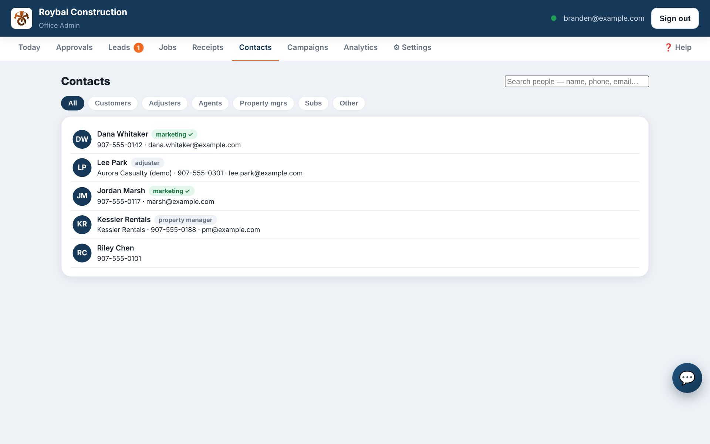
Contacts: customers, adjusters, agents, property managers and subs.
Search by name, phone or email; filter with the role chips. marketing ✓ means the person opted in to seasonal texts.
Open a contact for their jobs and leads, a timeline of every text, email, portal message and call, and Edit.
⚠ Merge review lists possible duplicates: Keep this one merges, Not a match dismisses.
Campaigns sends a seasonal text (freeze-up prep, spring roof check) to opted-in customers only:
＋ New campaign, tick the recipients, name it ("Freeze-up prep 2026").
Write the message; {name} becomes each person's first name.
Review & send and confirm. Every send is re-checked for consent, quiet hours and duplicates.
Analytics and settings
Analytics shows win rate, hours actual vs estimate, contract vs bid, average first touch and site-visit-to-estimate time, with charts for conversion by channel, why we lose, speed to lead, and estimate vs actual on completed jobs. Pick the range (all time, 12 months, 90 days, 30 days).
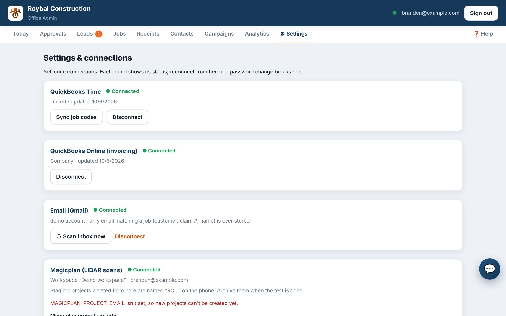
⚙ Settings & connections.
One panel per connection, each with its status (● Connected, ▲ Needs reconnect, ○ Not connected): QuickBooks Time (Sync job codes), QuickBooks Online (invoicing), Email (Gmail) (↻ Scan inbox now), Magicplan (last 10 scans, Link to job…) and 🧾 Receipt return windows. If a password change breaks one, reconnect it here.
Chapter 4
Job Board
For the office and crew leads · app.roybalconstruction.com/board
The Job Board is the digital whiteboard: every lead and job, its stage, its crew and its dates. Field Forms and the Office Admin read their stages and schedule from here.
Board views
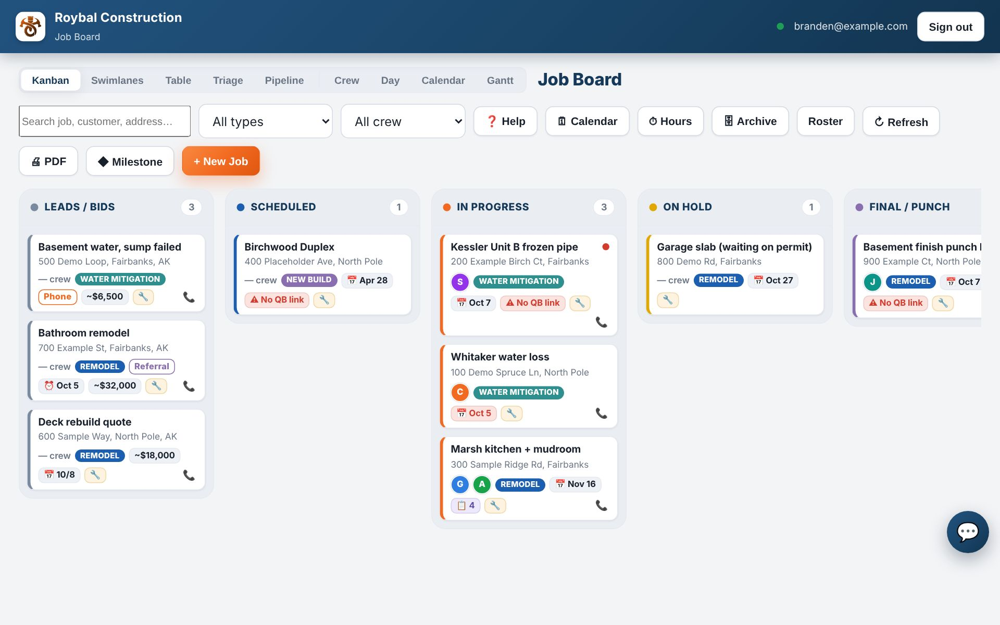
Kanban: drag cards between stage columns.
The switcher at the top left changes the view. The search box and the type and crew filters apply to every view.
View
Use it for
Kanban
The whiteboard. Columns: Leads / Bids, Scheduled, In Progress, On Hold, Final / Punch, Complete. Drag a card to change its stage.
Only what needs a decision: overdue, due today, crew overloaded, no crew assigned, field updates to review, materials arriving.
Pipeline
Open leads, won, lost and win rate, with leads sorted by next action.
Crew
The daily magnet board (below).
Day
Hour by hour per crew member, from QuickBooks Time clock-ins.
Calendar · Gantt
Day, week and month calendars; the Gantt timeline with phases, ⚡ critical path and 📸 baseline. Drag a bar to reschedule.
Card chips tell the story at a glance: crew initials, the job type, 📅 the next date (amber today, red late), 📋 phase count, ⚠ crew overload, and warnings such as ⚠ No QB link, ⚠ 0h since start or ⚠ field (a field update to review). Lead cards add the source, the estimated value and the site-visit date.
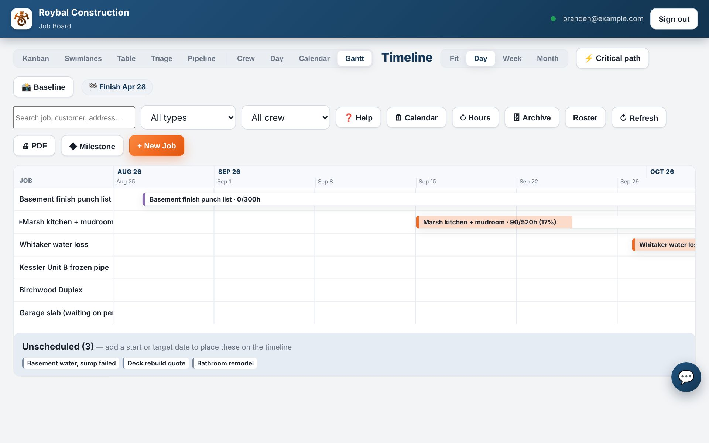
Gantt: the timeline, with unscheduled leads underneath.
Editing a job
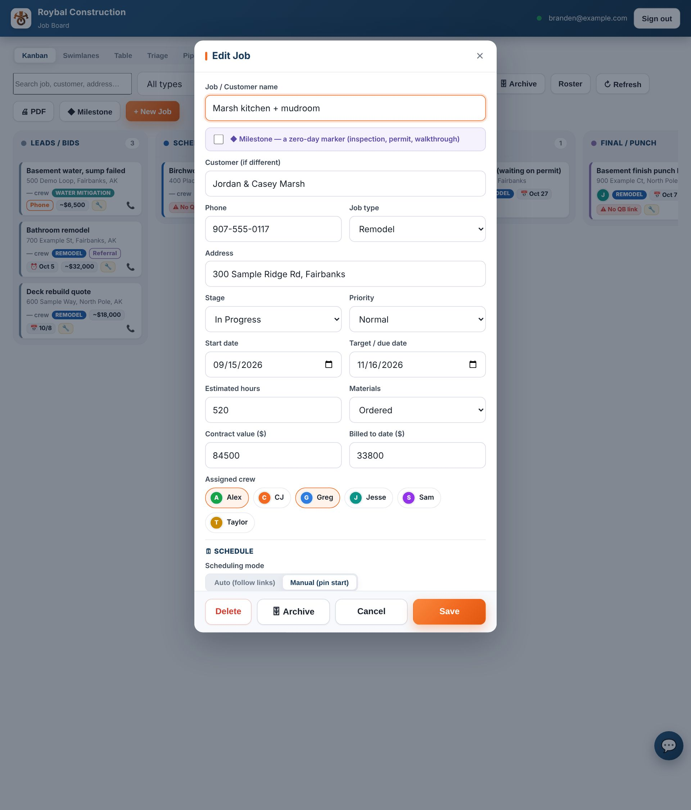
Edit Job: click any card.
Click a card (or + New Job) to open the editor: name, customer, phone, type, address, stage, priority, start and target dates, estimated hours, materials (not ordered, ordered, received), contract value, billed to date, assigned crew and notes.
🎯 Lead section (leads only): source, estimated value, next action, 📅 site visit and who's going. Buttons:
✓ Log what happened records a call or visit and the next follow-up.
✓ Won turns the lead into a job; the bid file in Field Forms becomes the job file.
✕ Lost asks for the reason and archives it.
🗓 Schedule section: Auto (start after other jobs or milestones finish, plus lag days) or Manual (pin the start), a "start no earlier than" date for materials or permits, and + Add phase with days, hours and lag. A phase plan sent from Field Forms waits under 📱 Phase plan from the field until you ⤓ Import checked phases.
The footer has 🗄 Archive, Delete, Cancel and Save. ◆ Milestone adds a zero-day marker such as an inspection or permit.
Crew, hours and QuickBooks Time
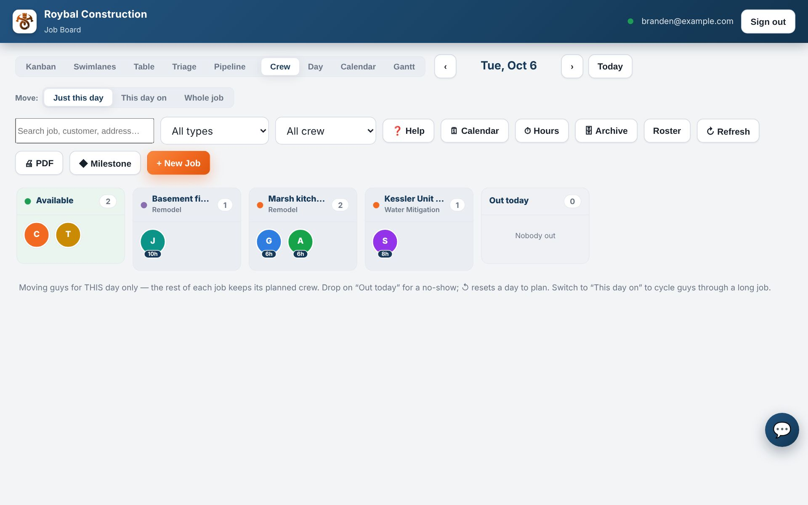
Crew: drag people between jobs for the day.
Crew view: pick the day with ‹ › or Today. Drag a person (or tap, then tap the job) from Available onto a job, or onto Out today for a no-show. Move: chooses Just this day, This day on or Whole job. ↺ resets a day to the plan.
⚠ overloads lists anyone booked past their shift, with who is free that day.
Time logged (in the job editor): link the job once with Link QuickBooks job, then ⤓ Sync hours pulls every QuickBooks Time entry for it. Set Count hours from to separate rebuild hours from mitigation hours. Hours can also be logged by hand.
⏱ Hours shows total hours and labor cost by crew and by job, estimated vs actual.
Roster adds and edits crew: name, phone, app login email, role, rate, QuickBooks employee link, the daily schedule text, and an optional bio shown on the customer portal (get their OK first).
🗓 Calendar sets working days, hours per day and holidays; 🖨 PDF prints the board; ❓ Help has the full built-in guide.
Chapter 5
Customer Portal
What our customers see, and how the office runs it from Field Forms
Each job can have a private web page for the customer: progress, photos, drying readings, documents to sign, material selections, the balance and a message thread. No account is needed; the customer opens the link we text them.
Turning the portal on
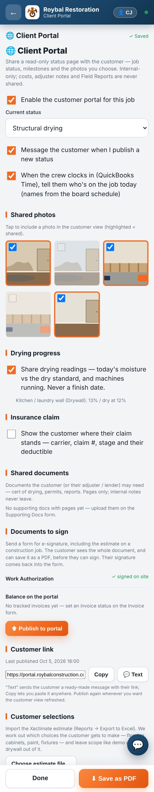
🌐 Client Portal form on the job.
On the job open 🌐 Client Portal and tick Enable the customer portal for this job.
Set the Current status (the milestone the customer sees). Leave Message the customer when I publish a new status on to text them each time it moves.
Tap the photos to share (highlighted = shared). Choose whether to share drying progress, the insurance claim (carrier, claim #, stage, deductible) and supporting documents.
Tap ⬆ Publish to portal.
Under Customer link, tap 💬 Text to send the customer a ready-made message with the link, or Copy.
Publish again whenever you want the customer's view refreshed. Costs, adjuster notes, field reports and receipts are never shared.
The same form handles Balance on the portal, Customer selections (Publish selections from the estimate), the customer Messages (✨ Draft reply, Send reply) and ⭐ Ask for a review by text at the end of the job.
What the customer sees
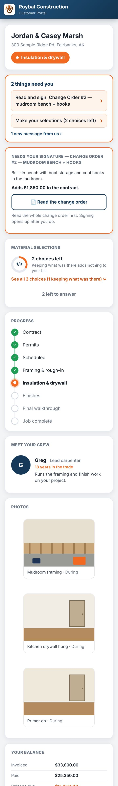
Top of the page: status, what we need, progress.Further down: crew, photos, balance, messages.
What we need from you lists anything waiting on the customer (read and sign a document, make selections), or "✓ Nothing needed from you right now".
Progress shows the milestones: for construction Contract, Permits, Scheduled, Framing & rough-in, Insulation & drywall, Finishes, Final walkthrough, Job complete; for restoration Scheduled, Water mitigation, Structural drying, Repairs approved, Reconstruction, Final walkthrough, Job complete.
Material selections: for each item the customer taps Keep it or I'd like something different, then Send my choices. Keeping what was there adds nothing to the bill.
Meet your crew, Photos, Drying progress, Your insurance claim and shared Documents, as the office chose.
Your balance: invoiced, paid, balance due, and a Pay online button.
Messages: a chat thread with the office.
When the job is complete: Your warranty, Your home file and How did we do?
Keep this handy lets the customer verify their phone by text code so the portal remembers all their projects.
Sending a document for signature
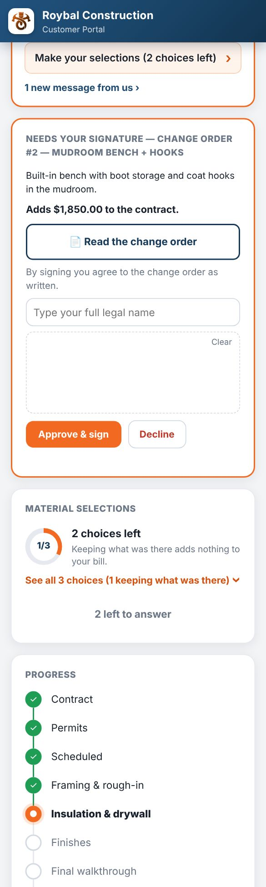
Signing opens only after the customer reads the whole document.
Estimates (construction jobs), work authorizations, change orders, certificates of drying, punch lists, certificates of completion and the contents pack-back receipt can all be signed in the portal.
Fill out the form in Field Forms as usual.
In 🌐 Client Portal → Documents to sign, tap Send for signature next to the document. The app makes a copy, puts it on the portal and texts the customer.
The customer opens 📄 Read the document, reads it in full, then types their name, signs and taps Sign (or Approve & sign on a change order), or Decline.
The status line on the form follows along: ⏳ sent, not opened yet → ⏳ opened, not signed yet → ✓ signed in the portal (name, date) or ✗ declined. The signature is copied back into the form.
Before sendingThe portal must be on for the job. Never test-sign a live document on a real customer's page.
Changed the document after sending? Use Send updated copy so the customer signs the newest one. A declined estimate offers Send revised estimate.
Chapter 6
Where leads come from
How a new customer reaches the app
Website form. The customer fills in name, phone, email, the service, the address, a description and whether it is an emergency, then taps Request my free estimate. The lead lands on the board and the office gets a text.
Phone. Calls we miss forward to the AI receptionist, which takes the details and books the lead with "AI-booked from a phone call" in the notes.
Website chat. The AI chat on the site can book a lead the same way.
Everything else (email to info@roybalconstruction.com, Yelp, referrals, walk-ins) is entered by the office with + New Job on the board at stage Leads / Bids.
From there the lead follows the flow in How a job moves through the app: worked in Office Admin → Leads, bid in Field Forms, won or lost on the Job Board.
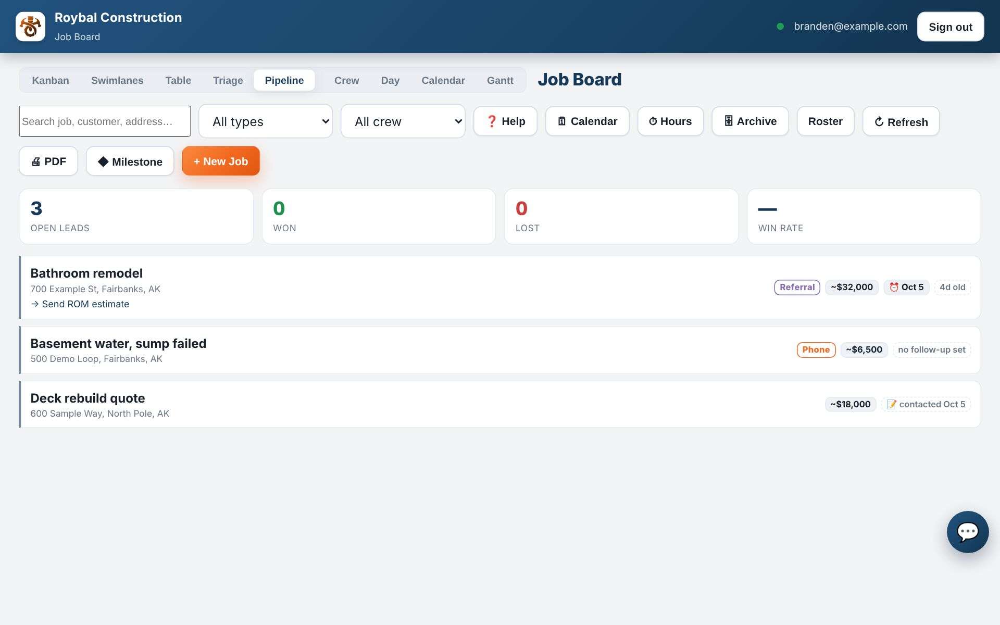
Pipeline on the Job Board: open leads by next action.
Chapter 7
What's new and in progress
As of the edition date on the cover
Feature
Status
Notes
🧾 Receipts on every job
Live
Snap, AI read, running job cost by category and vendor, budget flag. Nothing goes to QuickBooks yet.
🧾 Office receipt library and store return windows
Live
Office Admin → Receipts.
↩ Log a return
Waiting
Turns on once Branden writes "require v202" and every phone runs build v202 or newer.
✅ Approvals inbox
Live
Owner only. Both the text-YES queue and the newer approval queue in one list.
One-tap overdue-invoice reminders and adjuster emails
Live
Cards in Approvals, answered by tap or by texting YES and the card's number. Nothing sends without the owner's yes.
🧾 Invoice gaps (nightly billing check)
Live
Each night, water jobs are checked for drying-log equipment days, QuickBooks Time hours (hourly invoices only) and recorded Cat 3 work that no invoice bills. Gaps arrive as cards in Approvals; approving adds them once as a new draft invoice for the office to price. Approvals tab only, never by text.
📷 Equipment scan in and out
Waiting
Field build v208. A QR label on every unit; the crew scans units in, between rooms and out from the Drying Log, and Office Admin → Equipment shows where every unit is, keeps the fleet list and prints the labels. Scanning, the fleet list and labels switch on once this feature's database update is applied; Branden writes "require v208" before the crew starts scanning. Out now works from the jobs right away.
Receipts matched to QuickBooks
Planned
Nightly match to bank-feed charges, then "tag + attach" approvals; materials onto T&M invoices; cost vs estimate.
Magicplan quantities into the estimate
Planned
Room measurements flowing straight into estimate line items.
📅 My Week
Parked
Hidden until the board schedule feeds it reliably, so crews never see wrong days.
How this chapter stays currentEach time a feature ships, the thread that shipped it updates this table and the matching section, re-shoots the screen and rebuilds the PDF.
Chapter 8
Quick reference
Tear-out pages for the truck
Crew daily checklist
When
Restoration job
Construction job
Day 1, before work
Job header complete (claim #, carrier, category and class). Work authorization signed. Before photos of every room.
Pre-construction checklist: contract, deposit, permits. Before photos.
Every visit
Moisture readings at every marker. Drying log reading and equipment count. Units set, moved or pulled today scanned with 📷 Scan equipment. During photos. Receipts snapped.
Progress photos by room. Receipts snapped. Field report for anything the office needs to know.
Leaving site
Check the job page's completeness panel. Sync dot green.
Punch items logged with photos. Sync dot green.
Closing out
Dry standard met on every material; Cert. of Drying signed; every unit scanned out (Remove) or its removed date entered; after photos.
Punch list cleared; inspections passed; Cert. of Completion signed; after photos.
When something looks wrong
You see
Do this
Red dot, "Offline — saved on device"
Keep working. It syncs when the signal comes back.
"This app is out of date — close and reopen it to update"
Swipe Field Forms closed and open it again. Your work is safe on the phone.
"Sync issue: this account may not write…"
Your login has no role yet. Tell Branden.
A job looks old on this phone
👤 → ↻ Sync. Still old: sign out and back in to re-pull it.
Something you entered is missing
Open the job, unfold ⏪ Backups on this device and tap ⏪ Restore; it only adds back what is missing. Last resort: ☁ Cloud copy → Take the cloud's copy. Call the office first.
AI button does nothing, "AI needs internet"
Get signal; typed entries are already saved.
📷 Scan equipment greyed out
"Connect once to switch scanning on": get signal and open the drying log again. "Scanning switches on after this feature's database update is applied": not switched on yet; use + Add equipment.
Scanner says "Camera didn't start."
Tap 📷 Photo of the label or ⌨ Type the tag. On an iPhone or iPad, check Settings → Safari → Camera isn't set to Deny.
A label won't scan
Wipe it, turn on 🔦, hold the camera 6 to 10 in. away. Still nothing: ⌨ Type tag in the scanner, and tell the office the label needs replacing.
Start bid greyed out
A job for that customer or claim # already exists. Open that job.
Office connection shows ▲ Needs reconnect
Office Admin → ⚙ Settings → reconnect that panel.
Glossary
Asset tag
The number on a drying unit's label, such as AM-014: AM air mover, DH dehumidifier, AF air scrubber, HT heater, then the unit's number. The label's QR code carries the same tag. The fleet list in Office Admin → Equipment is the master list of tags.
Bid file
The Field Forms job created by 📐 Start bid. It becomes the job when the lead is won.
Category / Class
IICRC water category (1 clean, 2 gray, 3 black) and class of water (evaporation load 1 to 4).
Completeness panel
The list on each job of what is still missing before it can be billed.
Confirm chip
An action the assistant proposes; nothing happens until someone taps it.
Dry goal
The moisture content a material must reach to count as dry, filled in from the material.
Fleet list
The office's list of every labelled unit (tag, type, make, model, status), in Office Admin → Equipment. Labels print from it.
GPP / grain depression
Grains of moisture per pound of air, and the difference between the room air and the dehumidifier output. Both calculate themselves.
Packet
All of a job's completed forms in one PDF for the carrier.
Portal
The customer's private job page.
Return window
How many days a store allows a return; the office is warned before it closes.
Watch flag
A warning chip on a job row (stale readings, equipment 7+ days, no QB link).
Keeping this manual current
The manual lives in the app's repository at docs/manual/, next to the code it describes. When a feature ships, ask Claude in the project to "update the manual". It will:
Update the section for that feature and the What's new table in docs/manual/manual.html.
Re-shoot the screens from the app code with made-up demo data (docs/manual/tools/shoot.mjs). No real customer data is ever used.
Rebuild this PDF (docs/manual/tools/build.mjs) with a new edition date, and post the new copy in the project files.